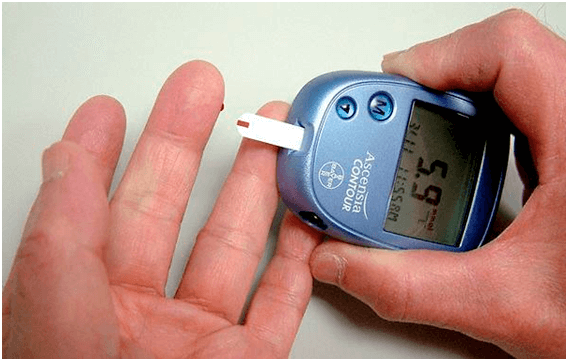
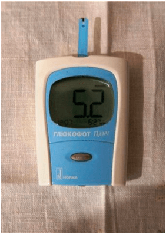

Η ΕΠΙΧΕΙΡΗΣΗ πάνω ΣΤΙΣ ΑΣΘΕΝΕΙΕΣ :
Θα μάθετε τα πάντα για το ΔΙΑΒΗΤΗ, όλα όσα έχουν κρύψει
εδώ και πολλά χρόνια
Κατηγορία: Χρήσιμα άρθρα για τον διαβητικό
Γεια σας! Με λένε Ανδρέας Σισμανίδης.
Εγώ ποτέ δεν έχω γράψει τα σχόλια, αλλά αποφάσισα να το κάνω αυτό για αυτούς όπως και εγώ, τους ανθρώπους με το διαβήτη. Επειδή εξαιτίας ιατρικών λαθών παραλίγο ήταν να χάσω τη ζωή μου.
Είμαι 35 ετών, έχω γυναίκα και δύο παιδιά. Δουλεύω μάγειρα στην λέσχη του σχολείου. Πριν από δέκα χρόνια μου διαγνώστηκε - ο διαβήτης του τύπου 2. Ήμουνα όλη την ώρα κουρασμένος, δεν μπορούσα να τρώω κανονικά, αναγκαζόμουν τον εαυτό μου να τρώω μόνο άπαχο φαγητό. . Και ήταν μέσα στην εργασία μου! Επιπλέον συνεχώς έπρεπε να παρακολουθώ το επίπεδο του σακχάρου στο αίμα .
Η ημέρα μου ξεκινούσε με το τρύπημα του δακτύλου μου και τη μέτρηση του σακχάρου. Εγώ ξόδευα για φάρμακα χιλιάδες ευρώ το μήνα . Αυτό με μισθό του ενός μάγειρα! Η καταστροφή! Ακόμα και οι ΤΙΜΕΣ για τα χάπια στην Ελλάδα ΑΥΞΗΘΗΚΑΝ κατά σειρά από πρόσφατα γεγονότα.

Έπρεπε να πουλήσω το εξοχικό μου και το αυτοκίνητο, να πάρω ένα δάνειο για να πληρώσω για τη θεραπεία και για την αγορά των ειδικών δοκιμαστικών ταινιών ... Παραλίγο να είχα οδηγήσει τον εαυτό μου στον θάνατο, λαμβάνοντας όλα αυτά. Είχα συνεχώς την ναυτία , και για μερικούς μήνες έγινα πολύ χοντρός. Και επίσης είχα γίνει σε βάρος της οικογένειας μου. Ζούσα μέσα στο φόβο, ότι και στα παιδιά θα εμφανιστεί το διαβήτη τύπου 2.
Νόμιζα ότι χειροτέρα δεν μπορεί να γίνει, μέχρι που μια μέρα η περίπτωση δεν έβαλε σε κίνδυνο την ζωή μου.
Αγόρασα τα καινούρια παπούτσια και φορώντας αυτά τα πόδια μου ήταν στους κάλους. Μετά από λίγο αυτοί μετατράπηκαν σε μη επουλωμένες πληγές. Δεν ένιωθα πόνο, αλλά ήταν δύσκολο να περπατήσω, εμφανίστηκε αίσθημα καύσου στις πατούσες, γι’ αυτό πήγα στο γιατρό. Μου είπε ότι υπάρχει μεγάλη πιθανότητα ανάπτυξης της γάγγραινας, και αυτό σημαίνει ένα πράγμα - μπορεί να ΧΑΣΩ ΤΟ ΠΟΔΙ !!!

Από αυτό που άκουσα με πέταξε σε ένα κρύο ιδρώτα. Ήξερα ότι η γάγγραινα είναι αρκετά συχνό φαινόμενο στους διαβητικούς, αλλά δεν πίστευα ότι ο ίδιος θα αντιμετωπιστώ με αυτήν. Πώς θα μπορέσω να ζήσω και να εργαστώ χωρίς πόδι!; Από το γιατρό βγήκα με ένα τεράστιο φόβο για τη ζωή μου και...με μια λίστα φαρμάκων ακόμα για εκατό ευρώ.
Το βράδυ της ίδιας ημέρας τηλεφώνησα στο skype σε έναν παλιό φίλο από το σχολείο, μένει στην Αμερική. Άκουσε το πρόβλημα μου σχετικά με την υγεία και ότι δεν είναι αρκετά χρήματα για φάρμακα. Με τη σειρά του μου είπε ότι στην Αμερική στην αγορά των φαρμάκων γίνεται μια παρόμοια κατάσταση. Οι γιατροί τους, επίσης, συνιστούνε να αγοράσουν ακριβά φάρμακα, που μόνο και κάνουν ότι επηρεάζουν την υγεία. Γιατί ΟΣΟ ΜΕΓΑΛΥΤΕΡΟ ΑΡΙΘΜΟ ΑΡΡΩΣΤΩΝ ΑΝΘΡΩΠΩΝ ΘΑ ΕΙΝΑΙ, τόσο ΠΕΡΙΣΣΟΤΕΡΟ ΘΑ ΑΠΑΙΤΟΥΝΤΑΙ ΤΑ ΧΑΠΙΑ. Και η πώληση των χαπιών φέρνει τρελό εισόδημα στις φαρμακευτικές εταιρείες . Νομίζω, ότι η Ελλάδα σε αυτό το θέμα, επίσης δεν αποτελεί εξαίρεση, απλά όλοι γι' αυτό δεν μιλούν.

Ρώτησα τον φίλο μου, αν ξέρει στην Αμερική με τι κάνουν την θεραπεία του διαβήτη, μου είπε, ότι τώρα αρνούνται από τα συνηθισμένα φάρμακα σε όφελος της χρήσης των φυσικών συμπληρωμάτων . Η αποτελεσματικότητά τους πολλές φορές είναι πολύ υψηλότερη και την βλάβη στον οργανισμό δεν φέρνουν, σε αντίθεση με τα χάπια. Σχεδόν όλα τα γνωστά φάρμακα από διαβήτη αντικαθίστανται εκεί με το ειδικό σκεύασμα - "" . Σε εμάς στην Ελλάδα εγώ δεν έχω ακούσει καν γι’ αυτόν και ως εκ τούτου, ζήτησα να στείλει σε μένα τον σύνδεσμο για το προϊόν αυτό.
Έμαθα ότι "" είναι το οργανικό σκεύασμα σε μορφή σκόνης. Το κύριο συστατικό του Λευκή μουριά, Η κανέλα, Χρώμιο. Αυτό το χρησιμοποιήθηκε για αιώνες στην ανατολική ιατρική για την ομαλοποίηση των επιπέδων σακχάρου στο αίμα. Μετά από πολλές μελέτες, η σύγχρονη επιστήμη έχει αποδείξει την αποτελεσματικότητα αυτής της πολυσακχαρίτης στην καταπολέμηση του διαβήτη τύπου 2. Και το πιο σημαντικό είναι –η ινουλίνη σε συνδυασμό με L-αργινίνη βοηθά στην αποκατάσταση των κυττάρων του παγκρέατος που παράγουν την ινσουλίνη!
"" - αυτό είναι το μόνο συμπλήρωμα που βασίζεται σε αυτό το εκχύλισμα. Στο διαβήτη του τύπου 2 αυτό μειώνει τη γλυκόζη του αίματος , μειώνει ή εντελώς επιλύει (πάνω από 20% των ασθενών), την ανάγκη για τα παρασκευάσματα που μειώνει το σάκχαρο , ενισχύει τα αιμοφόρα αγγεία και ρυθμίζει το μεταβολισμό.
"" συνιστάται να χρησιμοποιηθεί σαν σε συνδυασμό με την ήδη υπάρχουσα
φαρμακευτική θεραπεία , όσο και για λόγους ΠΡΟΛΗΨΗΣ, αν υπάρχει τον κίνδυνο ανάπτυξης της νόσου.
Αποφάσισα να δοκιμάσω τον "", γιατί εκείνη τη στιγμή δεν είχα τίποτα να χάσω, και
έκανα την παραγγελία απευθείας από την ιστοσελίδα του κατασκευαστή.
Σε γενικές γραμμές, από το πρωί εγώ έβαζα σε ένα ποτήρι ζεστό νερό, διαλυότανε μέσα ένα κουταλάκι του γλυκού σκόνης χωρίς λόφο και έπινα με μικρές γουλιές. Για να πω την αλήθεια, στο θαύμα δεν το πίστευα. Αλλά μάταια... Μετά από μια εβδομάδα παρατήρησα ότι άρχισα να κουράζομαι λιγότερο, σταδιακά μπόρεσα να φάω το αγαπημένο μου φαγητό . Το επίπεδο του σακχάρου στο αίμα ήρθε σε φυσιολογικά επίπεδα (μέχρι τη λήψη του "" το επίπεδο της γλυκόζης στο αίμα με άδειο στομάχι ήταν 9,6 , μετά από δύο εβδομάδες της λήψης με γεμάτο στομάχι – 5,4 ) και οι πληγές στο πόδι μου έχουν επουλωθεί. Δεν μιλώ για το βάρος μου. Έχασα 4,5 κιλά!
Δεν μπορούσα να πιστέψω στα αποτελέσματα... Αυτό είναι – η λύση του προβλήματος για τους ασθενείς με διαβήτη του τύπου 2. Εξαφανίστηκε ο πόνος και τα τσουξίματα, την ενόχληση για το θέμα τι τρώω . Δεν υπάρχει άγχος για τις εγχειρήσεις και ενέσεις. ΔΕΝ ΧΡΕΙΑΖΕΤΑΙ ΝΑ ΑΓΟΡΑΣΩ ΕΝΑ ΒΟΥΝΟ ΑΠΟ ΤΑ ΧΑΠΙΑ. Νίκησα το διαβήτη χωρίς τα προϊόντα των δόλιων φαρμακευτικών εταιρειών και των συμβουλών των λεγόμενων «εμπειρογνωμόνων».

Αμέσως να πω, "" πωλείται μόνο στο ίντερνετ , επειδή η βιομηχανία δεν αφήνει το συμπλήρωμα να μπει στην αγορά και με κάθε τρόπο προσπαθεί να μειώσει την πώληση του. Να θυμάσαι ότι οι φαρμακευτικές εταιρείες δεν θεωρούν εσένα ως ασθενή, τον οποίον μπορούν να θεραπεύσουν ... Αυτοί βλέπουν σε εσένα τον ισόβιο πελάτη.
ΚΑΙ ΣΩΖΕΙ ΤΙΣ ΔΙΚΕΣ ΣΑΣ εκατοντάδες χιλιάδες, που έπρεπε να δώσετε για ένα σωρό φάρμακα στις φαρμακευτικές εταιρείες. Να είστε προσεκτικοί, στην Ελλάδα μερικές φορές διαρρέουν τις απομιμήσεις. Παραγγείλετε στον ΜΟΝΑΔΙΚΟ επίσημο προμηθευτή στην Ελλάδα, αυτός εγγυάται την ποιότητα.
Ελπίζω ότι η ιστορία μου θα είναι χρήσιμη και δεν θα σώσει μόνο μια ζωή. Να είστε καλά στην υγεία σας!
Σχόλια:
Αυτοί με λευκές ιατρικές στολές τους θέλουν μόνο και μόνο για να κόψουν! Ένας γνωστός γιατρός με συμβούλεψε αυτό το σκεύασμα ΓΙΑ ΤΗΝ ΠΡΟΛΗΨΗ. "" λένε τώρα είναι η καλύτερη θεραπεία για τον διαβήτη. Δείτε μόνοι σας, για μένα θα πω ότι πριν από τη λήψη του η γλυκόζη με άδειο στομάχι ήταν 8.7, μέσα σε ένα μήνα – 5.9 ΜΕΤΑ ΤΟ ΦΑΓΗΤΟ! Συνεχίζω να πίνω.
Σας ευχαριστώ που γράψατε. Εμείς με το σύζυγό μου ήδη χάσαμε την ελπίδα... Διάβασα, παρήγγειλα από αυτή τη ιστοσελίδα . Σε λίγες εβδομάδες πήγα για εξετάσεις – από 7.9 η ινσουλίνη έγινε 4.8!!!
Κι εγώ θέλω να γράψω, σκέφτηκα, είναι η κοροϊδία όπως πάντα γίνεται , μέχρι ο ίδιος δεν έγινα σίγουρος. Έκανα την λήψη ένα μήνα. Πριν από τη λήψη αυτού του προϊόντος, η ινσουλίνη με άδειο στομάχι ήταν 9,8, μετά από ένα μήνα με γεμάτο στομάχι-5.9. Ζω υγιέστατα μια χαρά!
Γεια σας, με λένε Ελένη. Δεν έχω σακχαρώδη διαβήτη. Αλλά ο πατέρας μου είναι διαβητικός τύπου 2 εδώ και 15 χρόνια. Πείτε μου, πώς μπορώ να πολεμάω με αυτό το πρόβλημα; Αγαπώ τον πατέρα μου, και του εύχομαι πολλά χρόνια ζωής, απλά δεν ξέρω τι θα κάνω αν ξαφνικά...Συμβουλέψτε με, πώς να τον βοηθήσω, θα είμαι πολύ ευγνώμων
Δοκιμάστε σ ’αυτόν πριν από το φαγητό με τα φάρμακα του να δώσετε ένα ποτήρι ζεστό νερό με το « ». Τα συνηθισμένα φάρμακα δεν ακυρώνει, αλλά να μειώσει το ζάχαρο θα βοηθήσει σίγουρα!
Ο μπαμπάς μου έχει παρόμοιο πρόβλημα, αλλά η ινσουλίνη δεν κάνει την ένεση, μόνο τα χάπια πίνει. Έτσι άρχισε να ακούει τη μητέρα, κάνει την δίαιτα και άρχισε να παίρνει αυτό το συμπλήρωμα, όταν έπαψε να αισθάνεται το δάχτυλό του...
Οικονομικό σκεύασμα! Είμαστε βουτηγμένοι στα χρέη, ήταν ακριβή η θεραπεία του γιο μου. Στην δουλειά μια φίλη με συμβούλεψε να δοκιμάσουμε το "". Δεν το πίστευα εγώ ότι κάτι θα αλλάξει με αυτό, αλλά ποτέ δεν ξέρεις. Ο γιος μου τώρα είναι υγιής. Να φανταστείτε, από 9.7 η ινσουλίνη μειώθηκε σε 5.9! 
Κι εγώ είχα τον διαβήτη του τύπου 2, ήμουνα σε βάρος για την οικογένεια. Η αδελφή μου η γιατρός βρήκε μια ιστοσελίδα όπου λεπτομερώς περιγράφεται την δράση του "" και το θετικό αποτέλεσμα του. Αμέσως παραγγείλαμε αυτό το συμπλήρωμα , αυτό απλά μ` έφερε πίσω στην κανονική ζωή!
Ο αδελφός μου υπέφερε από τον διαβήτη του τύπου 2. Ήμουνα απελπισμένη, αλλά παρήγγειλα. Η τελευταία ελπίδα ήταν δικαιολογημένη! Η γλυκόζη 2 ώρες μετά το φαγητό ήταν 9,8 και μετά από μια εβδομάδα της λήψης με άδειο στομάχι είχε γίνει 5,3! Εδώ είναι το σύνδεσμο , όπου παρήγγειλα τον "".
Δουλεύω σαν γιατρό σε ιδιωτική κλινική. Μου έχουν προτείνει να πουλάω στους ασθενείς τα φάρμακα για %, αλλά πώς είναι δυνατόν... Η μητέρα μου έπασχε από διαβήτη τύπου 2, ενώ εγώ με τη μέθοδο της δοκιμής και του λάθους δεν βρήκα το δραστικό προϊόν. Τα αποτελέσματα είναι αυτά: πριν από την λήψη του "" η γλυκόζη με άδειο στομάχι ήταν - 8.7. Μετά από 3 μήνες λήψης είναι - 5.9. Πριν από τη λήψη και μετά από 2 ώρες μετά το φαγητό η γλυκόζη του αίματος - 9.8, και μέσα σε 3 μήνες μετά από 2 ώρες μετά το φαγητό - 5.2. Νομίζω ότι σύντομα όλα τα φάρμακα θα απορρίψουμε εντελώς. 
Οι γιατροί - φίδια είναι , το συμφέρον τους βλέπουν μόνο!!!!! Πόσο καιρό μπορούν να συνταγογραφήσουν τα ακριβά χάπια, όταν υπάρχουν φθηνά ανάλογα!;
Πού ήσασταν πριν με το άρθρο σας... Είμαι άρρωστη με τον διαβήτη... :(
Μην απελπίζεστε! Έμενα με " " βοηθάει. Στον εαυτό μου είναι δοκιμασμένο! Πίνετε αυτό το συμπλήρωμα το πρωί με τα βασικά φάρμακα για την πρόληψη και γίνεται πιο εύκολο
Και πώς αυτό το "" να λαμβάνω;
Έβαζα σε μια κούπα ζεστό νερό, διαλυότανε μέσα σ‘ αυτό, πρέπει να είναι χλιαρό, μετά πρόσθεσα ένα γεμάτο κουταλάκι του γλυκού "",ανακάτευα, έπειτα έπινα από το πρωί με άδειο στομάχι. Είναι πολύ απλό :)
Κι εγώ αντί για καφέ το πρωί αυτό έπινα )) Μειώνει τα επίπεδα της ινσουλίνης. Είχα πριν από τρεις εβδομάδες πρωί-πρωί 7,6 , και τώρα μέτρησα - 5,2. Κάπως έτσι))
Ποιος έπαιρνε το "", πείτε τι έχει στη σύνθεση του;
Έχω παραγγείλει για μένα, στη συσκευασία γραφεί ότι στην σύνθεση του έχει τα εξής: Fibregam, ινουλίνη, κιτρικό οξύ, βιταμίνη B6, B1. Νομίζω ότι όλα είναι χρήσιμα, δεν θα είναι χειρότερα σίγουρα.
Καλά, ότι υπάρχει μια τέτοια επιλογή! Ποτέ δεν καταλάβαινα, γιατί να αγοράσουμε τα φάρμακα με τρέλες τιμές, όταν υπάρχουν οικονομικά φάρμακα. Βγαίνω στη σύνταξη, δεν μπορώ να αφήνω πολλά στα φαρμακεία, γι’ αυτό ναι, καλύτερα αυτούς τους γιατρούς με λευκές στολές να ακούσουμε, αλλά να σκεφτόμαστε με το κεφάλι μας
Έδειξα στον φίλο – γιατρό τον "", διάβασε, έμεινε έκπληκτος που έχουμε στην Ελλάδα και γενικά πωλείται! Λέει ότι όλα τα συστατικά του πραγματικά έχει την θετική επίδραση στην υγεία και μειώνουν τα επίπεδα της ινσουλίνης στο αίμα. Για έναν διαβητικό μόνο τέτοιο προϊόν ένα ολόκληρο κουτί με φάρμακα πρώτων βοηθειών θα αντικαταστήσει στο ακέραιο.
Ω, Ανδρέα, γράψε σε παρακαλώ, πως ήταν τα αποτελέσματα
Έπαιρνα δύο εβδομάδες. Από 7.1 μειώθηκε το ζάχαρο σε 4.8. Πρέπει οπωσδήποτε να συνεχίσουμε!!!